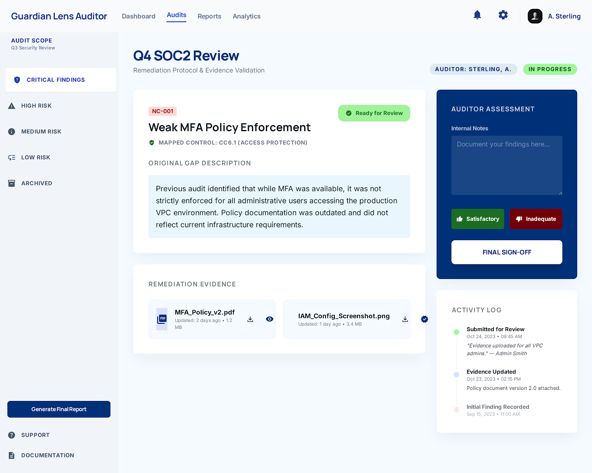

Remediation Review
search
A.S.
Q4 SOC2 Review
Remediation Protocol & Evidence Validation
badge Auditor: Sterling, A.
pending_actions In Progress
NC-001
Weak MFA Policy Enforcement
verified_user
Mapped Control: CC6.1 (Access Protection)
check_circle
Ready for Review
Original Gap Description
Previous audit identified that while MFA was available, it was not strictly enforced for all administrative users accessing the production VPC environment. Policy documentation was outdated and did not reflect current infrastructure requirements.
Remediation Evidence
description
MFA_Policy_v2.pdf
Updated: 2 days ago • 1.2 MB

IAM_Config.png
Updated: 1 day ago • 3.4 MB
Auditor Assessment
Activity Timeline
Submitted
Oct 24, 09:45 AM
Submitted for Review
"Evidence uploaded for all VPC admins." — A. Smith
Updated
Oct 23, 02:15 PM
Evidence Updated
Policy document version 2.0 attached.
Opened
Sep 15, 11:00 AM